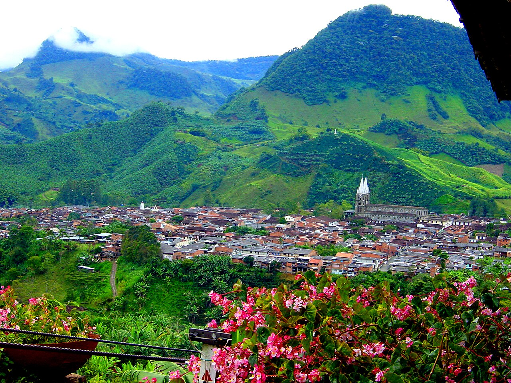
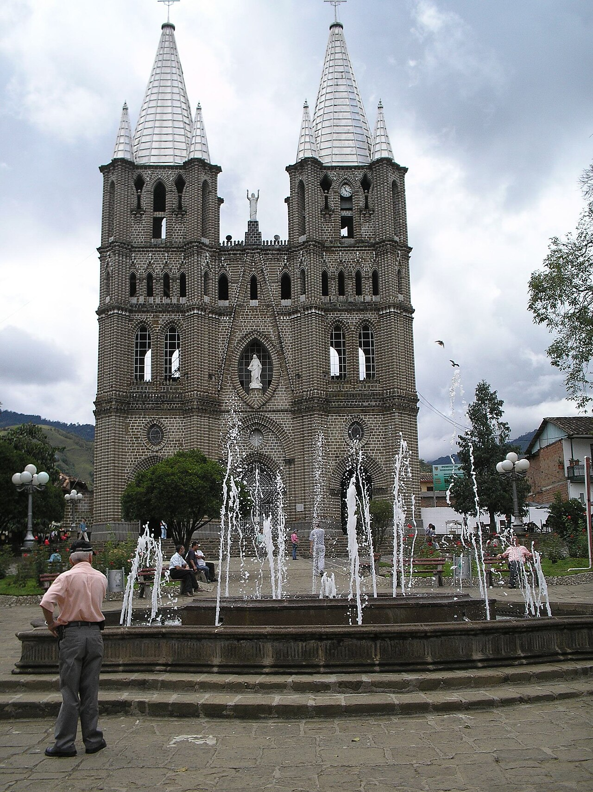
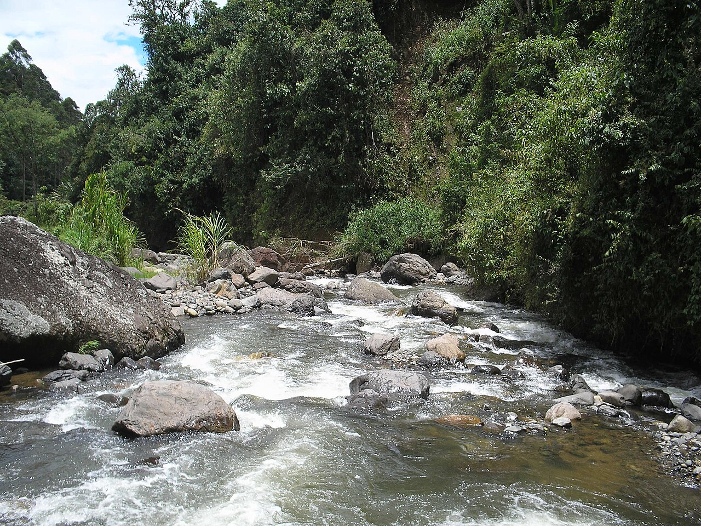

Basilica of the Immaculate Conception
Discover its stone architecture beside the square.
Find on the map ↗Southwest · Antioquia, Colombia
Colourful balconies and mountains to explore between a conversation and a coffee.
What to see ↗Discover its history ↓
Do you have a business in Jardín? Leave your details to take part ↗
Discover the destination
Coffee culture and life around the square shape Jardín’s identity. Traditional architecture and its stone basilica tell the story of this heritage town.

Ideas for your visit
Choose the places that spark your curiosity and plan your route at your own pace.
Discover its stone architecture beside the square.
Find on the map ↗Discover the town’s meeting place and cafés.
Find on the map ↗
03A route to discover the rural landscape.
Find on the map ↗Images resized; framing may vary by screen. Photographs licensed under CC BY-SA retain that license.
Connect the parts of your trip
Find how to get around, where to stay and eat, things to do and the services you need. Explore at your own pace.
There are no places published in this directory yet.
Locate the places you want to visit and check their opening hours, entry conditions and accessibility before planning your route.
Find Jardín on the map ↗There are no upcoming events published.
Organising an event? Let’s talk ↗Join Explorando Lugares
Be part of it.
Whether you run a hotel, restaurant, bar or shop, provide transport or organise tours and activities, we would like to hear about your business.
Leave your contact details. We will get in touch to discuss featuring your business on the portal.
I want to take part ↗